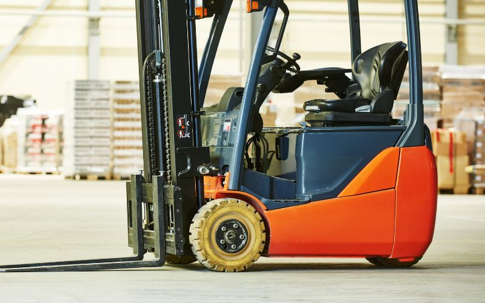
Chariots élévateurs
Vérification des chariots de manutention utilisés en entrepôt, industrie et logistique.
DécouvrirAccueil VGP
Nous effectuons les Vérifications Générales Périodiques de vos engins de levage et de manutention, principalement dans les Hauts-de-France.
Demander un devisLa Vérification Générale Périodique est un contrôle obligatoire des équipements de levage et de manutention, encadré par l'arrêté du 5 mars 1993 modifié par l'arrêté du 4 juin 1993 et par le décret n°2006-1033 du 22 août 2006. Elle vise à s'assurer que vos machines restent conformes aux exigences de sécurité tout au long de leur utilisation, en examinant leurs pièces critiques, leurs dispositifs de sécurité et leur état d'usure. Selon le type d'équipement, elle doit être renouvelée tous les 6 ou 12 mois.
Une VGP par type d'équipement, réalisée par nos vérificateurs sur votre site.

Vérification des chariots de manutention utilisés en entrepôt, industrie et logistique.
DécouvrirVérification des plateformes élévatrices mobiles de personnes (PEMP).
Découvrir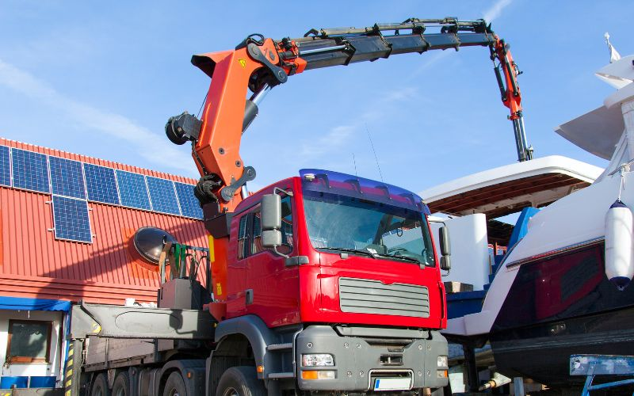
Vérification des grues de chargement montées sur véhicules porteurs.
Découvrir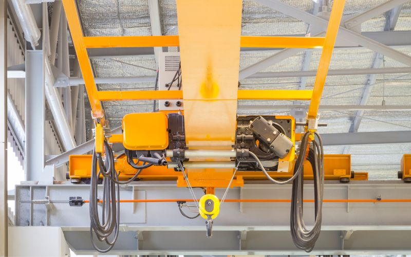
Vérification des ponts roulants et portiques de levage en ateliers industriels.
Découvrir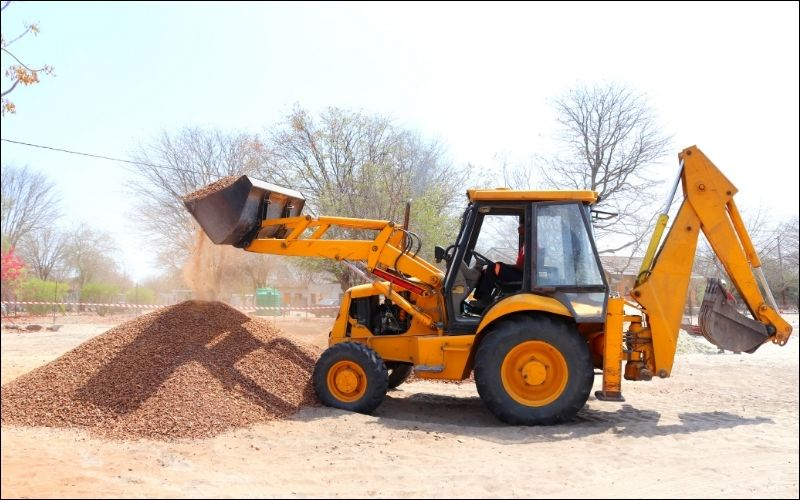
Vérification des chargeuses utilisées en BTP, carrières et travaux publics.
Découvrir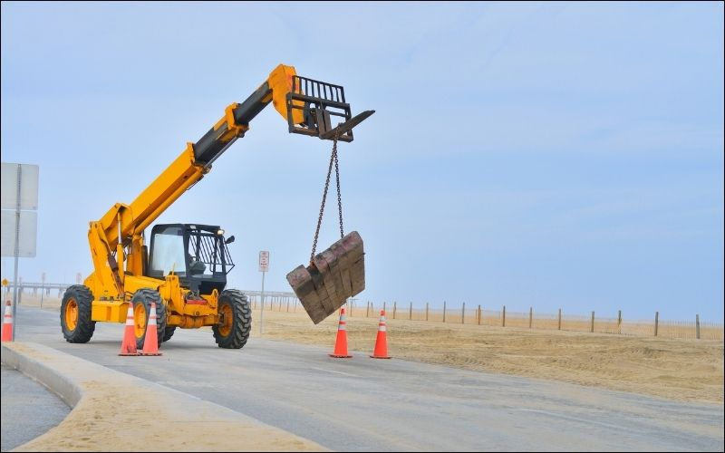
Vérification des chariots télescopiques utilisés pour la manutention en hauteur.
Découvrir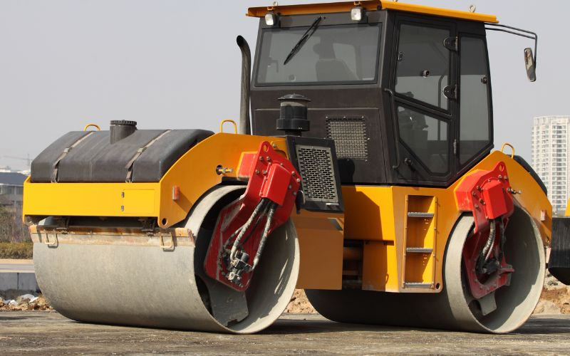
Vérification des compacteurs utilisés pour les travaux de terrassement et de voirie.
Découvrir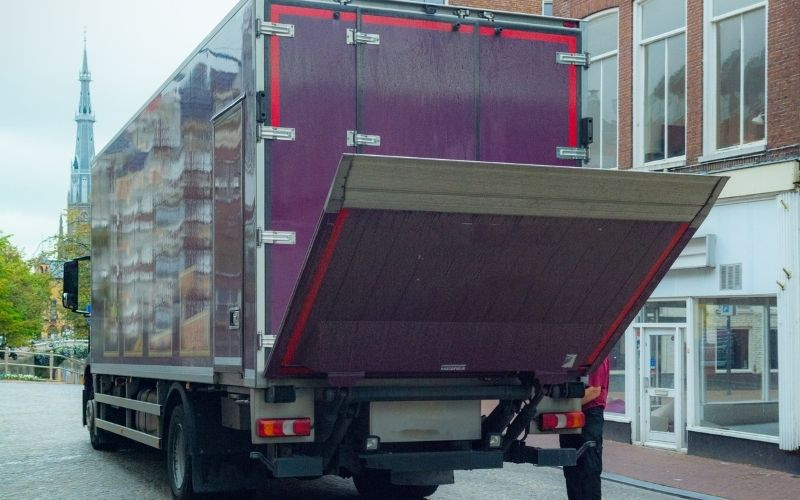
Vérification des hayons élévateurs montés sur véhicules de livraison et de transport.
Découvrir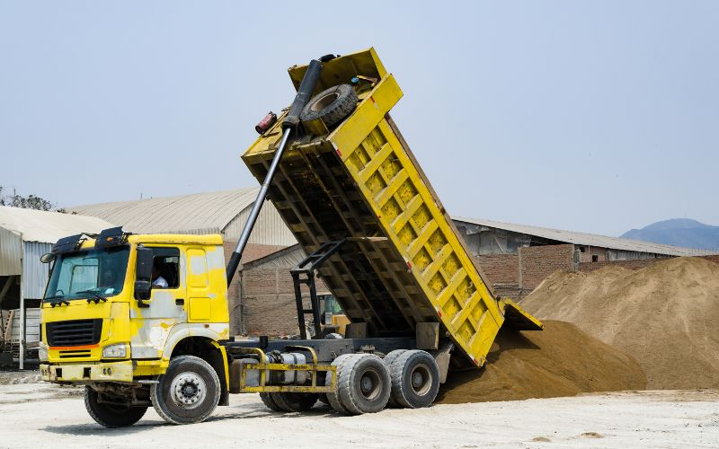
Vérification des bras de levage utilisés pour des opérations de manutention ciblées.
Découvrir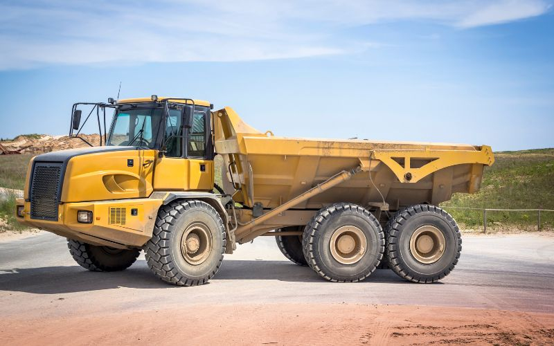
Vérification des tombereaux utilisés pour le transport de matériaux sur chantier.
Découvrir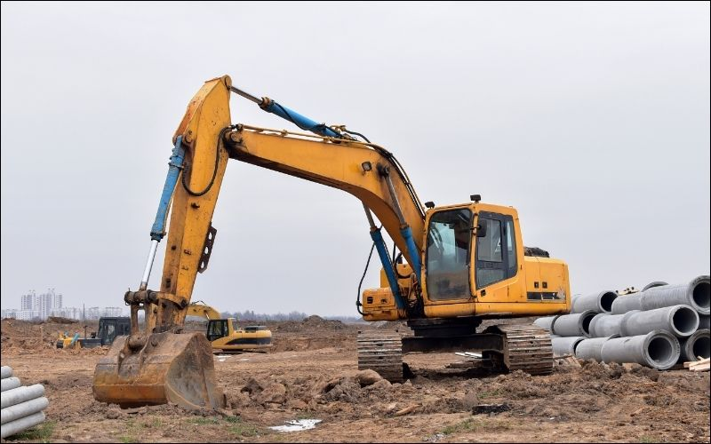
Vérification des pelleteuses équipées pour des opérations de levage.
Découvrir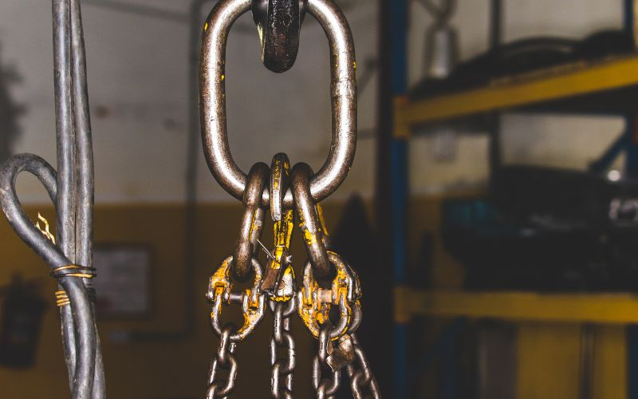
Vérification des élingues, chaînes, palonniers et autres accessoires de levage.
DécouvrirÀ titre indicatif : la périodicité exacte dépend du type d'équipement et de son usage. SECURIFORM la confirme avec vous équipement par équipement.
| Périodicité | Équipements concernés |
|---|---|
| Tous les 6 mois | Chariots élévateurs, chargeuses, chariots télescopiques, nacelles élévatrices (PEMP), grues auxiliaires de chargement, hayons élévateurs, bras de levage, accessoires de levage |
| Tous les 12 mois | Ponts roulants, compacteurs, tombereaux (transport standard ; 6 mois si usage de levage), pelleteuses |
Lors de certaines VGP, le vérificateur utilise des masses d'essai calibrées, appelées poids de test, pour valider en conditions réelles la capacité de charge annoncée par le fabricant de l'équipement.
Cette étape permet de s'assurer que les dispositifs de sécurité (limiteurs de charge, systèmes de freinage) réagissent correctement lorsque l'équipement est sollicité à sa charge nominale.
En savoir plus sur les poids de testUne intervention organisée pour limiter au maximum l'impact sur votre activité.
Nous recensons avec vous les équipements concernés et convenons d'une date d'intervention.
Notre vérificateur contrôle l'équipement dans vos locaux : pièces critiques, sécurités, état d'usure.
Vous recevez un rapport de vérification écrit, mentionnant les observations et éventuelles réserves.
Nous vous accompagnons sur la levée des réserves et planifions la prochaine échéance.
Nos vérificateurs interviennent sur l'ensemble de la région Hauts-de-France : Lille, Roubaix, Tourcoing, Villeneuve-d'Ascq, Douai, Valenciennes, Lens, Béthune, Arras, Cambrai, Dunkerque, Calais, Saint-Omer, Boulogne-sur-Mer et Amiens, ainsi que les communes environnantes. Pour vos formations, SECURIFORM reste par ailleurs à votre service sur l'ensemble du territoire français.
Oui, dès lors que votre entreprise utilise des équipements de levage ou de manutention couverts par la réglementation. C'est une obligation de l'employeur au titre de la sécurité de ses salariés et des tiers.
Le rapport de vérification mentionne une réserve. Selon sa gravité, l'équipement peut continuer à être utilisé le temps de la remise en conformité, ou son usage doit être suspendu jusqu'à correction. SECURIFORM vous accompagne dans cette démarche.
La vérification doit être réalisée par une personne compétente, formée à cet effet, disposant des connaissances techniques et réglementaires nécessaires : c'est le rôle de nos vérificateurs.
Le CACES® atteste de la compétence du conducteur à utiliser un engin en sécurité. La VGP, elle, contrôle l'état et la conformité de l'équipement lui-même. Les deux sont complémentaires et souvent nécessaires pour la même machine.
Nos VGP sont principalement réalisées dans les Hauts-de-France. Pour vos besoins de formation (CACES®, habilitation électrique, secourisme…), SECURIFORM intervient en revanche sur toute la France : n'hésitez pas à nous consulter.
Complétez ce formulaire, notre équipe revient vers vous rapidement pour organiser l'intervention.
Afin de renforcer l'équipe SECURIFORM, nous recrutons des formateurs sur toute la France.
Notre équipe vous répond rapidement et construit avec vous la formation adaptée aux risques de votre entreprise, partout en France.
03 20 67 34 90Au-delà des VGP, SECURIFORM prépare vos équipes à la sécurité au travail sur tout le territoire français : conduite en sécurité, habilitation électrique, secourisme et bien plus.
Découvrir nos formations